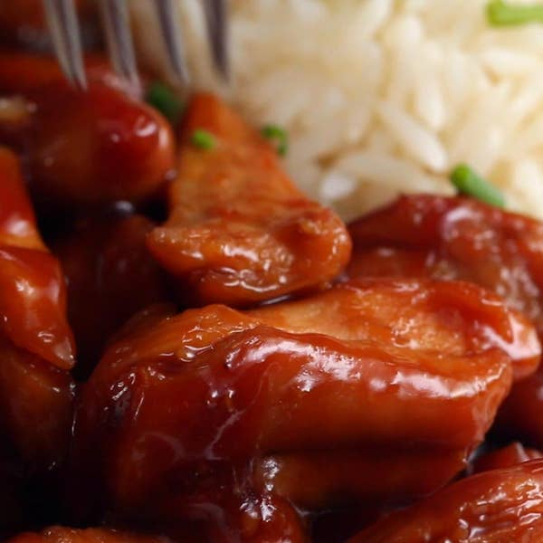

3-ingredient Chicken Teriyaki

Description
Try this simplied version of a classic dish that takes less than 30 minutes!
Ingredients
- 2 lb chicken thighs, slived into chunks
- 1 cup soy sauce
- 1/2 cup brown sugar
Steps
- Sear the chicken thighs evenly in a pan, then flip.
- ADd the soy sauce and brown sugar, stirring and bringing to a boil.
- Stir until the sauce has reduced and evenly glazes the chicken.
- Serve with rice, if desired!
- Enjoy!
Return to homepage